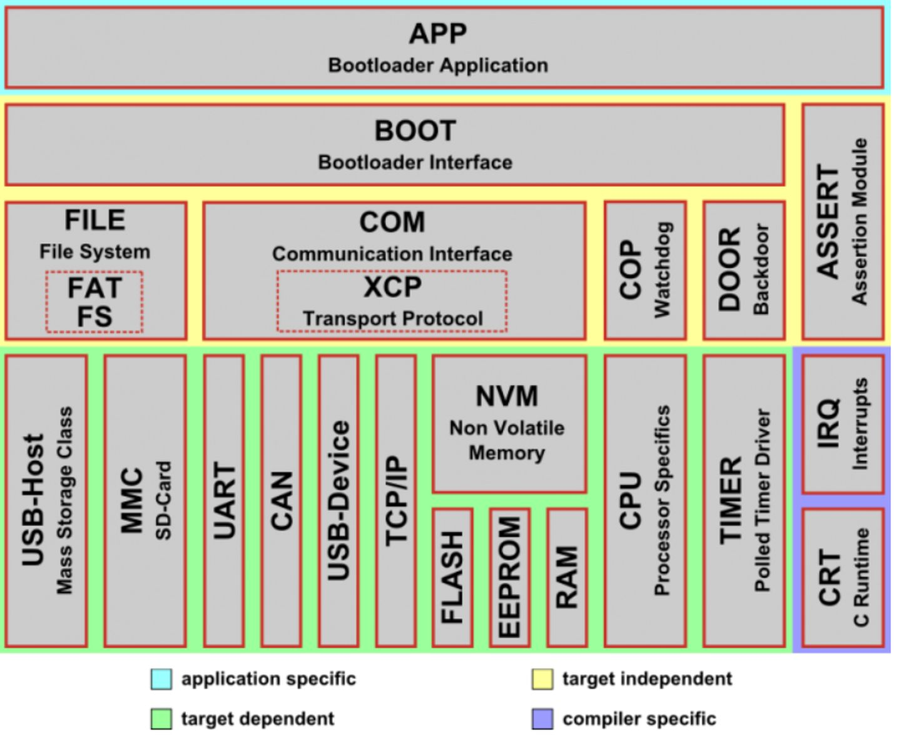

BootLoader¶
OpenBLT¶
MCU bootloader GPLv3
OpenBLT is an open source bootloader for STM32, XMC, HCS12 and other microcontroller targets.
OpenBLT enables you and your customers to update the firmware on your microcontroller based product. A major benefit of OpenBLT being open source is that you can customize and tweak the bootloader to your specific needs.
Note
该方案可以通过STM32CubeMX 查找 OpenBootloader打开示例工程
MCUboot¶
MCU bootloader
MCUboot is a secure bootloader for 32-bit MCUs. The goal of MCUboot is to define a common infrastructure for the bootloader, system flash layout on microcontroller systems, and to provide a secure bootloader that enables simple software upgrades.
MCUboot is operating system and hardware independent and relies on hardware porting layers from the operating. Currently, mcuboot works with both the Apache Mynewt and Zephyr operating systems, but more ports are planned in the future. RIOT is currently supported as a boot target with a complete port planned.
boot/bootutil: The core of the bootloader itself.
boot/boot_serial: Support for serial upgrade within the bootloader itself.
boot/zephyr: Port of the bootloader to Zephyr
boot/mynewt: Mynewt bootloader app
boot/mbed: Port of the bootloader to Mbed-OS
boot/nuttx: Bootloader application and port of MCUboot interfaces for NuttX.
boot/espressif: Bootloader application and MCUboot port for Espressif SoCs.
imgtool: A tool to securely sign firmware images for booting by MCUboot.
sim: A bootloader simulator for testing and regression
Note
该方案已被STM32 CubeMX支持，集成在相关示例中